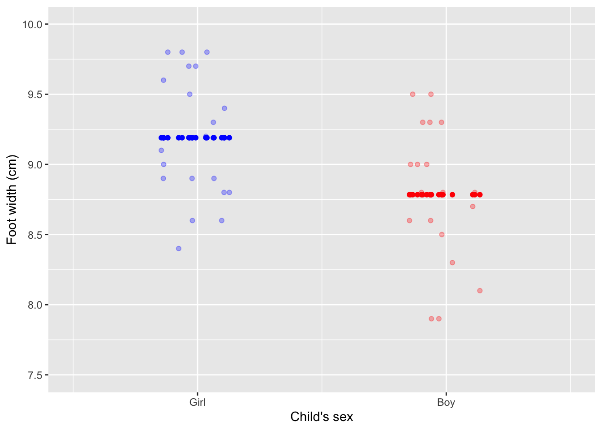
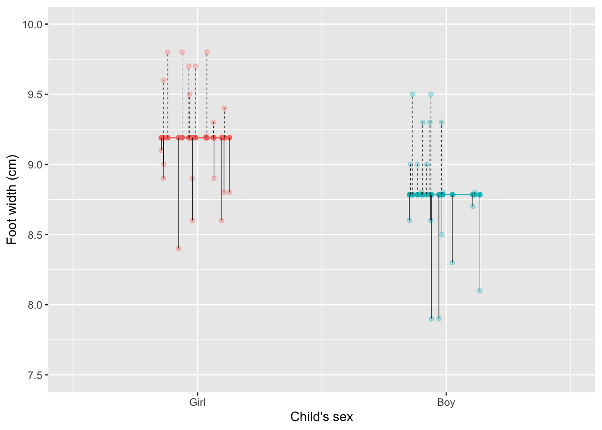
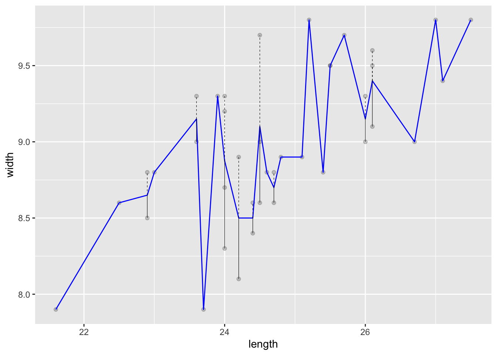
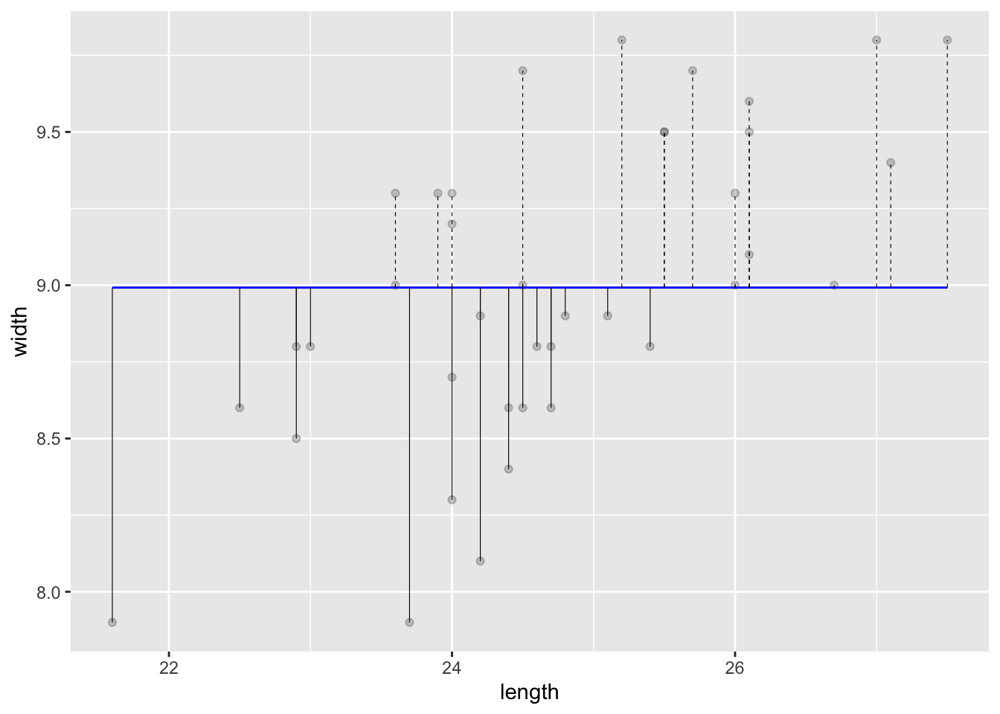
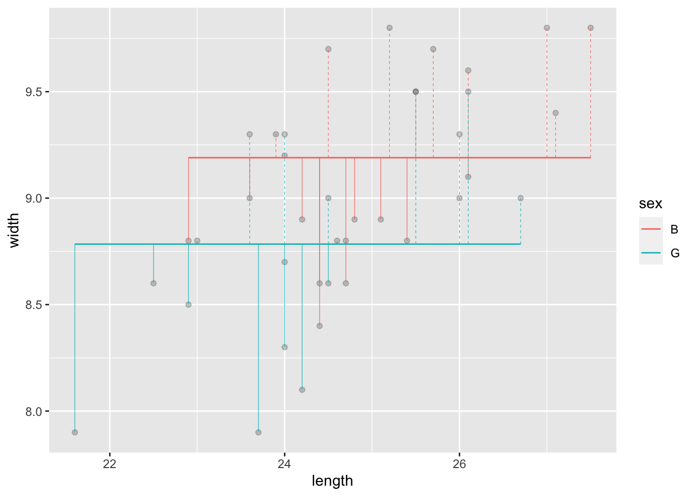
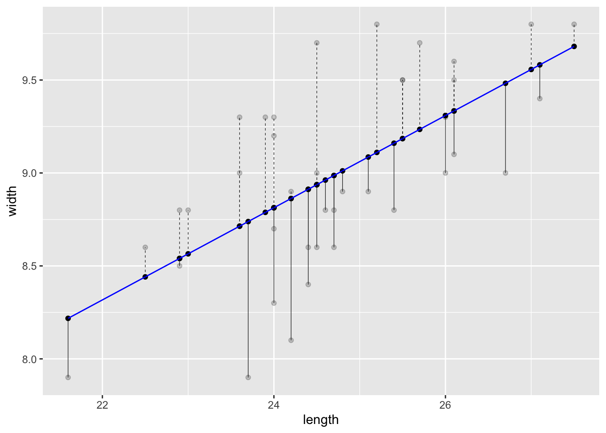
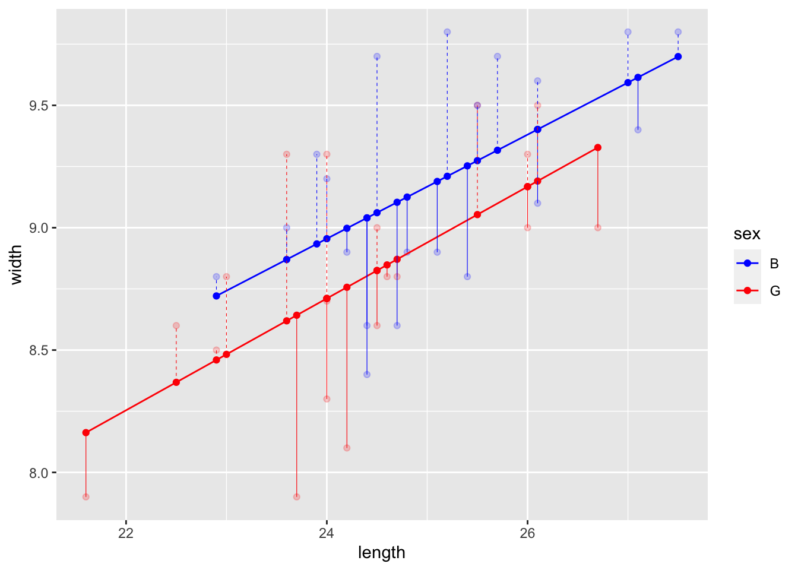
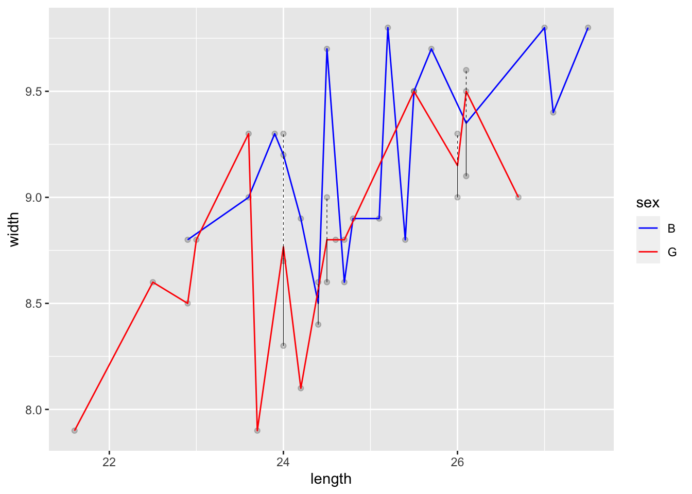

Using a shrinkage transformation like mean() along with group_by() constitutes a simple form of statistical modeling, a powerful way to summarize data and to characterize the relationships among variables. Statistical modeling has its own vocabulary and a major goal of this Lesson is to introduce that vocabulary.
Picking up on the example from the previous Lesson, here are the mean foot widths of the children recorded in the KidsFeet data frame.
KidsFeet |>
group_by(sex) |>
mutate(modval = mean(width))| sex | length | width | modval |
|---|---|---|---|
| B | 26.1 | 9.1 | 9.27 |
| B | 24.5 | 9.7 | 9.27 |
| B | 23.6 | 9.0 | 9.27 |
| G | 26.0 | 9.0 | 9.00 |
| G | 24.5 | 9.0 | 9.00 |
We have given the name modval to the column added by mutate. This is short for “model value,” which will become our generic name for the quantity calculated using shrinkage transforms in this way. Two additional important new vocabulary terms are “response variable” and “explanatory variable(s).” The response variable is the quantity we seek to explain via modeling. The explanatory variable(s) are the materials for the explanation. In the wrangling command that produces Table 1, width the response variable. Naturally, width varies from row to row; this is no more than saying that kids differ one from another in this way.
The goal of modeling is to shrink away unwanted variation in the response variable, keeping only that variation associated with the explanatory variable(s). You can see that modval still varies from row to row, but the variation is simpler. All that is retained from the response variable width is the variation that goes along with the explanatory variable sex.
Figure 1 displays such shrinkage visually. The transluscent dots show each childs actual foot width. The darker dots are the model values; all the girls have one model value, all the boys another.
Code
For_plot <- KidsFeet |> group_by(sex) |>
mutate(modval = mean(width)) |>
mutate(jitterx = as.numeric(sex) + runif(length(sex),-.15,.15)) |>
mutate(resid = width - modval)
For_plot |>
ggplot(aes(x = jitterx)) +
geom_point(aes(y = width, color=sex), alpha=0.3) +
geom_point(aes(y=modval, color=sex)) +
scale_x_continuous(breaks = 1:2, labels=c("Girl", "Boy"), limits=c(0.5, 2.5),
name="Child's sex") +
guides(color = "none") +
ylab("Foot width (cm)") + ylim(c(7.5,10)) +
scale_color_manual(values=c("blue", "red"))
Even though all the girls share the same model value and similarly with the boys, each child has his or her own “residual,” which is the difference between that child’s actual foot width and the model value for that child. Calculating the residuals is very easy: just subtract the model value from the response variable’s value.
KidsFeet |> group_by(sex) |>
mutate(modval = mean(width),
resid = width - modval)?(caption)
# A tibble: 5 × 5
# Groups: sex [2]
sex length width modval resid
<fct> <dbl> <dbl> <dbl> <dbl>
1 B 26.1 9.1 9.27 -0.167
2 B 24.5 9.7 9.27 0.433
3 B 23.6 9 9.27 -0.267
4 G 26 9 9 0
5 G 24.5 9 9 0 Figure 2 shows the residuals for each child as a vertical line segment. When the actual foot width is higher than the model value, the residual is positive. When the foot width is lower than the model value, the residual is negative.

The purpose of statistical modeling is to divide the variation in the response variable into two components: the variation in the model values and the variation in the residuals.
Quantitive explanatory variables
When the explanatory variable is categorical—sex in the previous examples—the mean() is a good way to shrink the individual values of the response onto a single value for each level of the explanatory variable.
But often an explanatory variable is quantitative. For instance, we might decide to model foot width using foot length as the explanatory variable. Among the 39 kids in KidsFeet, there are 25 unique foot lengths. If we use group_by(length) then there will be 25 different model values, as in Figure 3.
KidsFeet |>
group_by(length) |>
mutate(modval = mean(width),
resid = width - modval,
linetype = resid > 0) |>
ggplot(aes(x=length)) +
geom_point(aes(y=width), alpha=0.2) +
geom_line(aes(y=modval), color="blue") +
geom_segment(aes(y=modval, yend=width, x=length, xend=length,
linetype=linetype),
linewidth=0.2) +
guides(linetype="none")
length creates 25 different groups, one for each unique value of length. For groups with just one kid, the model value goes exactly through the value of foot width for that kid. For groups with two or three kids, the model value goes somewhere in the middle vertically. Here, the model values are connected by line segments to make it easier to see how they vary with foot length.With so many different model values, there’s hardly any shrinkage apparent; the model values vary almost as much as the response variable (width) does.
[Modeling with ntiles in the exercises.]
A better approach for quantitative explanatory variables is to shrink down to a line or curve that goes through the middle of the various width values. In this Lesson, we will use the shrink_linear() function to create the model values. The first argument is the response variable, the second the explanatory variable.
shrink_linear() for long. It turns out that the wrangling notation is not very well suited to building anything but simple models.To illustrate, the next command shows the usage of shrink_linear().
KidsFeet |> mutate(modval = shrink_linear(width, length))| sex | length | width | modval |
|---|---|---|---|
| B | 26.1 | 9.1 | 9.33 |
| B | 24.5 | 9.7 | 8.94 |
| B | 23.6 | 9.0 | 8.71 |
| G | 26.0 | 9.0 | 9.31 |
| G | 24.5 | 9.0 | 8.94 |
Just to look at Table 2, the model values seem a jumble. It’s easier to see what’s going on by graphing the data and model values, as in Figure 4.
Code
P2 <- KidsFeet |>
mutate(modval = shrink_linear(width, length),
resid = width - modval,
linetype = resid > 0) |>
ggplot(aes(x=length)) +
geom_point(aes(y=width), alpha=0.2) +
geom_point(aes(y=modval)) +
geom_line(aes(y=modval), color="blue") +
geom_segment(aes(y=modval, yend=width,
x=length, xend=length,
linetype=linetype),
linewidth=0.2) +
guides(linetype="none")
P2
width versus length from the KidsFeet data frame. The model values (black dots) are set by imposing a linear relationship between the response and explanatory variables.The scatter of the width and length variables in a point plot is shrunk down to a line by the shrink_linear() function. Overall, the pattern of the model values shows a steady increase in foot width as a function of foot length.
It’s also possible to use shrink_linear() in conjunction with group_by().
KidsFeet |>
group_by(sex) |> mutate(modval = shrink_linear(width, length))| sex | length | width | modval |
|---|---|---|---|
| B | 26.1 | 9.1 | 9.40 |
| B | 24.5 | 9.7 | 9.06 |
| B | 23.6 | 9.0 | 8.87 |
| G | 26.0 | 9.0 | 9.17 |
| G | 24.5 | 9.0 | 8.83 |
Code
P3 <- KidsFeet |>
group_by(sex) |>
mutate(modval = shrink_linear(width, length),
resid = width - modval,
linetype = resid > 0) |>
ggplot(aes(x=length, color=sex)) +
geom_point(aes(y=width), alpha=0.2) +
geom_point(aes(y=modval)) +
geom_line(aes(y=modval)) +
scale_color_manual(values=c("blue", "red")) +
geom_segment(aes(y=modval, yend=width,
x=length, xend=length,
linetype=linetype),
linewidth=0.2) +
guides(linetype="none")
P3
width versus length with sex as a grouping variable.Are simpler models better?
Figure 6 shows six different ways of constructing model values. In each case, the model values constitute the shrunken values of the response variable width. In panel (a), the shrinkage is the most possible, all the way down to a single model value of width. In (b) the shrinkage is a little less; one model value for each sex. In successive panels (c) through (e), the shrinkage gets smaller and smaller. By panel (f), there is hardly any shrinkage in width at all.

mean(width)
mean(width) grouped by sex
length
length grouped by sex
length
length and sexwidth based on length and sex.Earlier in this Lesson we stated,
“The goal of modeling is to shrink away unwanted variation in the response variable, keeping only that variation associated with the explanatory variable(s).”
Exercise: Show that the sum of squares and mean square for modeling using the median is larger than for the mean.